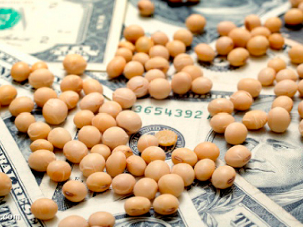
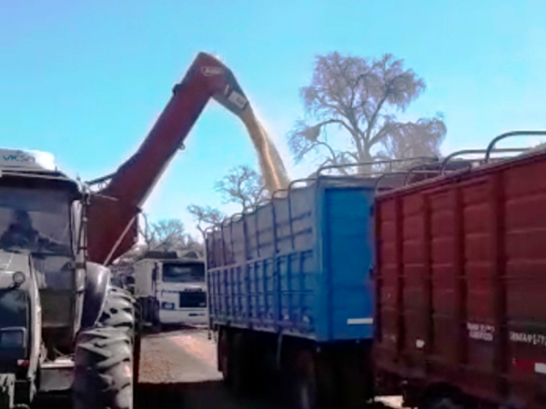
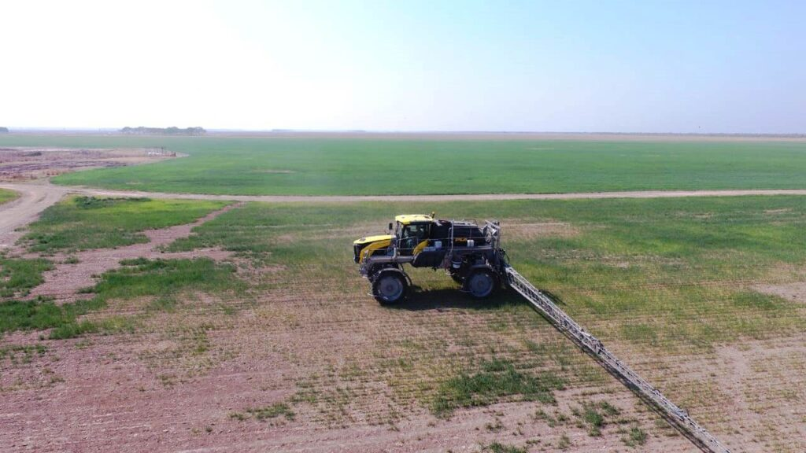

Noticias
La "Niña” podría extenderse hasta mayo y afectaría a la siembra del trigo

El fenómeno que provoca sequía podría durar hasta los comienzos de la implantación del cereal de invierno, según señaló el organismo norteamericano
La soja subió más de 30 puntos el miércoles en Chicago y la escasa oferta indica posibilidad de nuevas altas
Después de dos días de bajas considerables, los futuros de soja volvieron a subir en la Bolsa de Chicago
Se inauguró un nuevo acceso ferroviario en Timbúes: enviar mercadería al Gran Rosario desde el norte del país puede resultar un 40% más barato
Se inauguró un acceso que conecta a la localidad de Timbúes con el ramal F25 del Belgrano Cargas. Así, ACA y COFCO se suman a AGD en Timbúes. Enviar granos desde el norte a través del Belgrano Cargas podría implicar una reducción del 40% en los fletes.
Cepo al dólar: aumentan las quejas por faltantes y aumentos de precios
Alambre, neumáticos, fertilizantes y repuestos de maquinara agrícola son algunos de los insumos básicos que el campo reclama que hace más de un año hay dificultades para conseguirlos y si se logra, es con fuertes incrementos